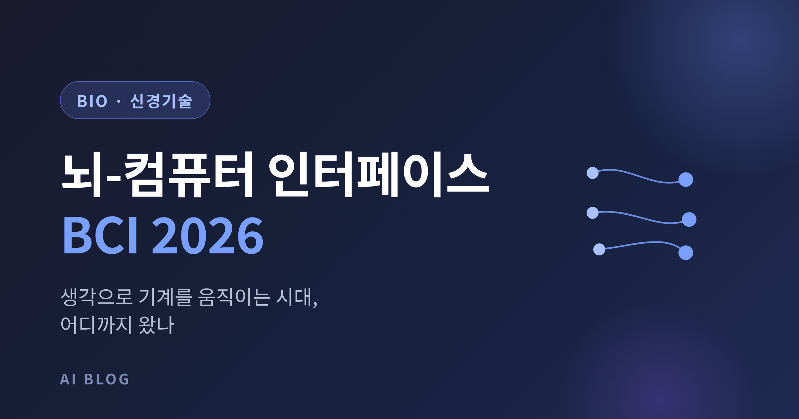
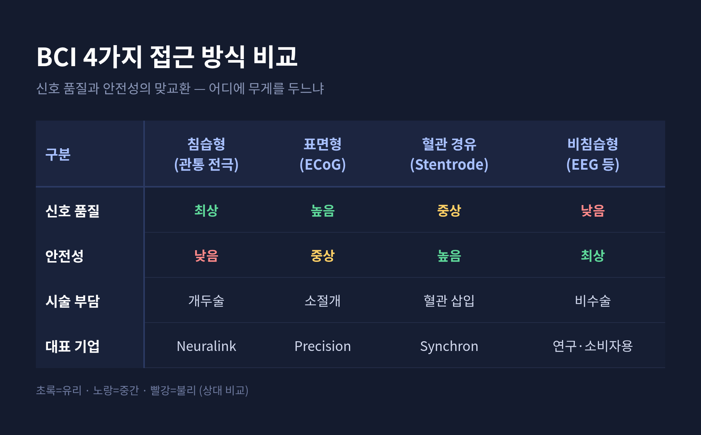
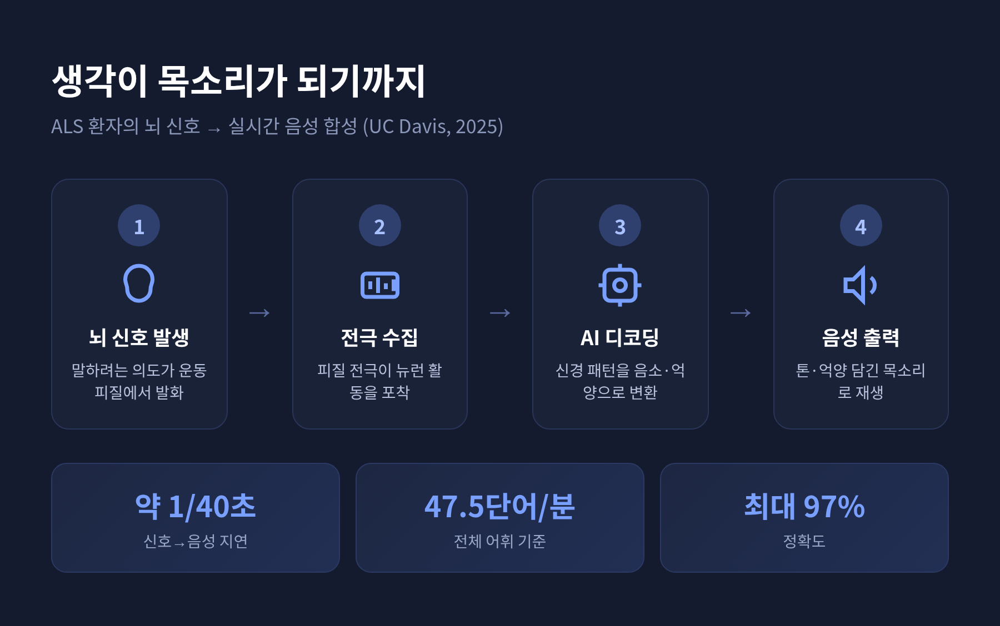
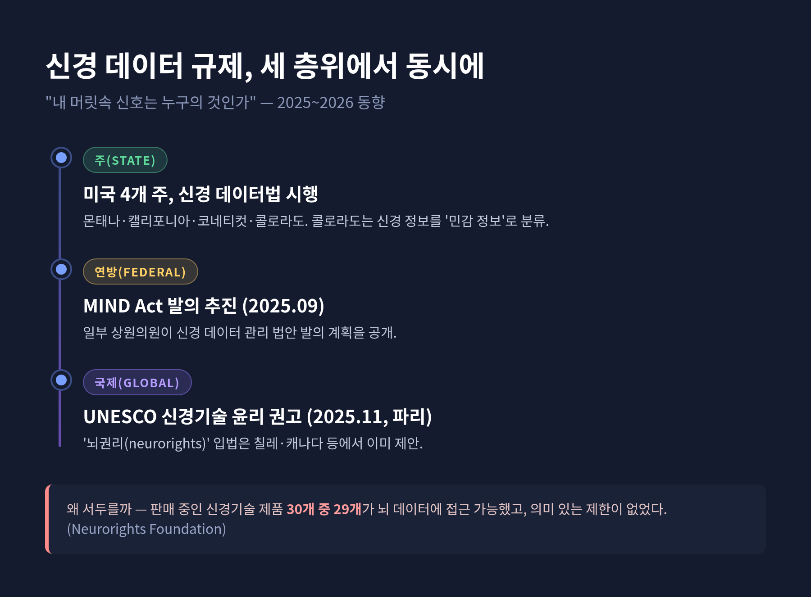

[바이오] 뇌-컴퓨터 인터페이스(BCI) 2026 — 생각으로 기계를 움직이는 시대, 어디까지 왔나

이번 글에서는 2026년 뇌-컴퓨터 인터페이스(BCI)가 어디까지 왔는지 정리해 보겠습니다.
생각만으로 기계를 움직인다는 이야기는 이제 공상이 아닙니다. 임상시험에서 실제 환자가 커서를 옮기고, 잃었던 목소리와 시력을 되찾고 있습니다. 다만 빛만큼 그림자도 함께 자라고 있습니다. 아래에서 기업 현황, 기술 방식, 의료 적용, 그리고 규제 쟁점을 차례로 살펴보겠습니다.
2026년 BCI, 한눈에 보면
먼저 결론부터 말씀드립니다.
2026년의 BCI는 실험실을 벗어났습니다. 임상시험 단계에서 환자가 생각만으로 컴퓨터와 로봇을 조작하고, 마비·실어·실명 환자의 기능이 일부 회복되는 단계에 들어섰습니다.
세 가지만 기억하시면 충분합니다.
- 대표 3사는 Neuralink(침습·고대역폭), Synchron(혈관 경유 최소침습), Precision Neuroscience(표면형 박막 전극)입니다.
- 의료 적용은 운동 마비, 발화 장애, 시각 상실이라는 세 축으로 확장되고 있습니다.
- 신경 데이터 프라이버시와 '뇌권리(neurorights)' 규제가 주·연방·국제 차원에서 동시에 형성되고 있습니다.
시장 규모는 조사기관마다 다릅니다. 다만 2026년 기준 약 27억~33억 달러, 연평균 14~17% 성장이라는 범위로 대체로 수렴합니다.

대표 3사는 지금 어디까지 왔나
세 회사가 같은 목적지를 향해 서로 다른 길을 갑니다.
Neuralink는 가장 공격적인 길을 택했습니다. 운동 마비 환자가 생각만으로 커서를 조작하는 'Telepathy' 임플란트가 핵심입니다. 2025년 10월 기준, 1년 넘게 작동한 임플란트에서 18개월간 안정적인 신호가 유지됐고 중대한 이상반응 보고는 없었습니다. 참가자 수는 시점에 따라 다릅니다. 2025년 9월 약 12명이던 것이 2026년 초 기준 약 21명으로 늘어, 미국·영국·캐나다·UAE 등 여러 나라로 확장됐습니다. 커서 속도는 2025년 여름 기준 약 8 bps에 이르렀습니다.
Synchron은 다른 길을 택했습니다. 머리를 열지 않습니다. 경정맥을 통해 스텐트형 전극(Stentrode)을 운동피질 인근 혈관에 밀어 넣습니다. 침습형의 신호 이점과 비침습형의 안전성, 그 중간 지대를 노리는 셈입니다. 중증 상지마비 환자 6명을 대상으로 한 초기 타당성 시험에서 뇌·혈관 손상 없이 1차 평가지표를 충족했습니다. 2025년 11월 시리즈 D로 2억 달러를 조달하며 2026년 pivotal 임상 진입을 준비하고 있습니다. 다만 이 pivotal 임상의 구체적인 목표 환자 수는 아직 공개되지 않았습니다.
Precision Neuroscience는 가장 조심스러운 길을 갑니다. 머리카락보다 얇은 유연 필름에 마이크로전극 1,024개를 담은 'Layer 7'을 뇌 표면에 밀착시킵니다. 뇌를 관통하지 않고, 1mm 미만 절개로 넣고 뺄 수 있습니다. 2025년 3월 FDA 510(k) 클리어런스를 받았는데, 현재 허가 범위는 최대 30일 임시 이식까지입니다. 누적 37명에게 시험했고 감염 위험은 1% 미만으로 보고됐습니다.
세 회사를 한 문장으로 비교하면 이렇습니다.
"같은 산을 두고, 누구는 정상을 직선으로 오르고 누구는 둘레길로 돌아간다."
침습이냐 비침습이냐, 끝나지 않은 트레이드오프
방식 선택은 결국 안전과 성능의 맞교환입니다.
비침습형(EEG 등)은 머리에 아무것도 심지 않습니다. 안전하고 접근성이 좋습니다. 그러나 두개골과 두피를 거치며 신호가 감쇠되고 번져 품질이 낮습니다.
침습형(관통 전극)은 정반대입니다. 단일 뉴런급의 최고 신호를 얻지만, 개두술의 위험과 시간이 흐를수록 신호가 열화되는 문제를 안습니다.
그 사이를 메우려는 시도가 표면형(ECoG)입니다. 뇌를 관통하지 않으면서도 비교적 높은 품질의 신호를 얻습니다. Synchron의 혈관 경유 방식 역시 개두 없이 침습형 수준의 접근을 노리는 또 다른 중간 전략입니다.
예전엔 "신호를 잘 잡으려면 깊이 찔러야 한다"는 한 방향뿐이었습니다. 지금은 "얼마나 덜 침습적으로, 얼마나 좋은 신호를 얻느냐"는 절충의 경쟁으로 무게가 옮겨가고 있습니다.
마비·발화·시각 — 의료 현장에서 일어나는 변화
가장 마음을 움직이는 대목은 임상 결과입니다.
운동 마비 환자에게 BCI는 디지털 기기를 다시 손에 쥐여 줍니다. Telepathy와 Synchron 모두 1차 적용 대상이 사지마비·중증 상지마비 환자의 기기 제어입니다.
발화 장애 쪽 성과는 특히 인상적입니다. 2025년 6월, UC Davis 연구진은 ALS 환자의 뇌 신호를 실시간 음성으로 합성했습니다. 단순한 텍스트 변환이 아니라 톤과 억양, 멜로디까지 담긴 목소리를 재현했습니다. 신경신호에서 음성까지의 지연은 약 1/40초였고, 전체 어휘 기준 분당 47.5단어, 정확도는 최대 97%에 이르렀습니다. 다만 이 연구는 ALS 중심이며, 실어증 환자에게도 유용할지는 아직 연구 단계의 과제로 남아 있습니다.
시각 회복도 빠르게 움직이고 있습니다. Science Corporation의 PRIMA 망막 임플란트 임상에서는 황반변성 환자의 84.4%가 글자와 숫자, 단어를 다시 읽을 수 있게 됐습니다. 12개월 시점에 평균 시력검사표 약 5줄이 개선됐고, 이 결과는 2025년 10월 NEJM에 실렸습니다. Neuralink는 시각 피질에 칩을 심어 광점을 만드는 'Blindsight'의 첫 환자 적용을 2026년 말 목표로 두고 있습니다. ReVision Implant의 시각 피질 보철은 FDA 혁신의료기기로 지정돼, 본격적인 인체 임상을 2027년으로 내다보고 있습니다.

물론 아직 완벽하지는 않습니다. 망막 임플란트는 뇌에 직접 심는 BCI와는 다른 계열이고, 시각 회복은 또렷한 시야가 아니라 광점 인지에 가깝습니다. 그래도 "다시 읽을 수 있게 됐다"는 한 문장이 환자에게 어떤 의미일지는 짐작하기 어렵지 않습니다.
빛이 밝을수록 그림자도 짙다 — 뇌 데이터와 규제
기술이 앞서가는 만큼, 한 가지 질문이 따라붙습니다. 내 머릿속 신호는 누구의 것입니까.
규제는 이미 움직이기 시작했습니다. 미국에서는 몬태나·캘리포니아·코네티컷·콜로라도 4개 주가 신경 데이터 관련 법을 두고 있습니다. 콜로라도는 신경 정보를 '민감 정보'에 포함시켰습니다. 연방 차원에서는 2025년 9월 일부 상원의원들이 신경 데이터 관리 법안(MIND Act) 발의 계획을 밝혔습니다. 국제적으로는 2025년 11월 파리에서 UNESCO가 신경기술 윤리 권고를 내놨습니다.
왜 이렇게 서두르는지는 한 조사가 잘 보여줍니다. Neurorights Foundation 조사에 따르면, 온라인에서 판매되는 신경기술 제품 30개 중 29개가 뇌 데이터에 접근할 수 있었고, 그 접근에 의미 있는 제한이 없었습니다.

쟁점은 분명합니다. 디지털 사고의 주인은 누구인가, 정신적 프라이버시는 어떻게 지킬 것인가입니다. 마음의 무결성을 보호하자는 '뇌권리' 입법은 칠레와 캐나다 등에서 이미 제안됐습니다.
정리하면 이렇습니다.
2026년의 BCI는 가능성을 증명하는 단계를 지나, 책임을 묻는 단계로 들어서고 있습니다. 한쪽에서는 환자가 목소리와 시력을 되찾고, 다른 한쪽에서는 "내 생각은 안전한가"라는 물음이 자라납니다.
— 생각을 읽는 기술은, 결국 그 생각을 어떻게 지킬 것이냐는 질문과 함께 와야 합니다.
이 기술이 사람을 향하고 있느냐고 물으신다면, 적어도 지금까지의 임상 결과는 그렇다고 답해도 좋을 듯합니다. 다만 그 답을 지켜내는 일은 기술이 아니라 우리의 몫일 것입니다.